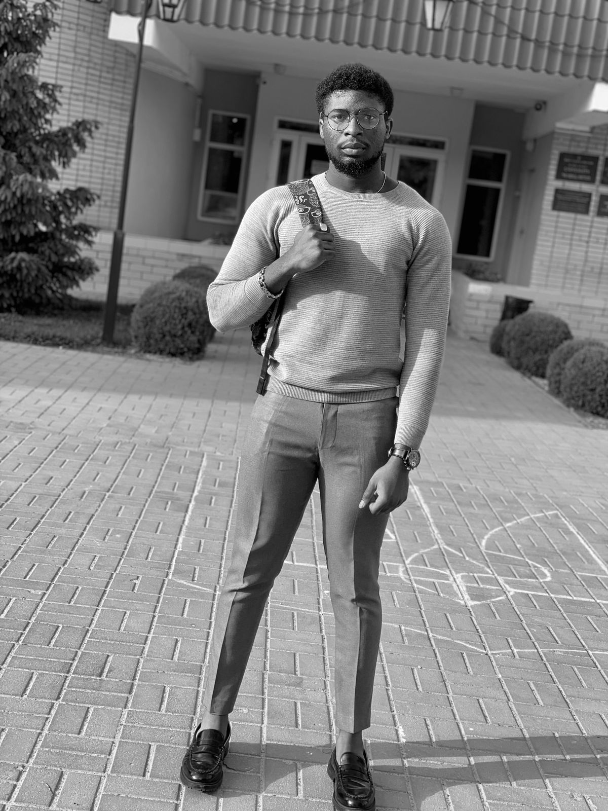

Daniel Chibueze

Summary
I am a multi-talented product designer and web developer, combining creativity and technical expertise to deliver exceptional digital experiences.
Education
Coursera-Product Design
Udemy- Web development
Work Experience
Product Designer | ABC Design Studio | 2019-2021
- Led the design process for various digital products, from concept development to final implementation.
- Conducted user research and user testing to inform design decisions and ensure a user-centered approach.
- Collaborated closely with cross-functional teams, including developers and stakeholders, to deliver high-quality design solutions on time and within budget.
- Iteratively improved designs based on feedback and data, resulting in enhanced user satisfaction and increased product usability.
Web Developer | XYZ Tech Company | 2018-2020
- Developed and maintained responsive and user-friendly websites, ensuring cross-browser compatibility and optimal performance.
- Implemented clean and efficient code using HTML, CSS, JavaScript, and various frameworks to bring designs to life.
- Collaborated with designers and stakeholders to translate design concepts into functional and visually appealing websites.
- Conducted rigorous testing and debugging to identify and resolve any issues, ensuring seamless functionality and a smooth user experience.
Skills
Product Designer
- Proficient in design tools (Adobe Creative Suite, Sketch, Figma, etc.) for creating visually appealing and user-centered designs.
- Experience in conducting user research, usability testing, and prototyping to inform design decisions and improve user experiences.
- Strong understanding of design principles, typography, and color theory to create cohesive and impactful designs.
- Collaboration and communication skills to work effectively with cross-functional teams and stakeholders throughout the design process.
Web Developer
- Proficient in front-end development languages and frameworks (HTML, CSS, JavaScript, React, Angular, etc.) for building responsive and interactive websites.
- Strong knowledge of back-end development technologies (Node.js, Express, databases, etc.) for full-stack web development.
- Familiarity with version control systems (Git) and agile development methodologies for efficient project management and collaboration.
- Problem-solving and debugging skills to identify and resolve technical issues and optimize website performance.
Awards
Best Intern of the year 2022
Hobbies
Contact me